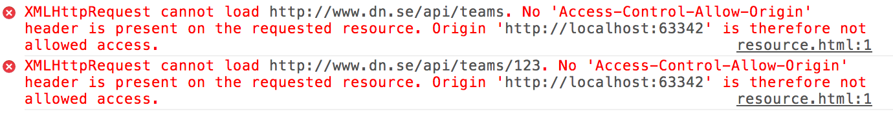
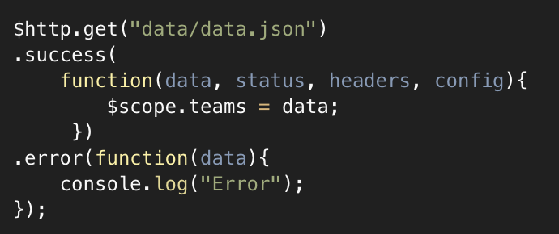
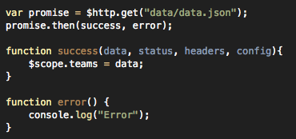
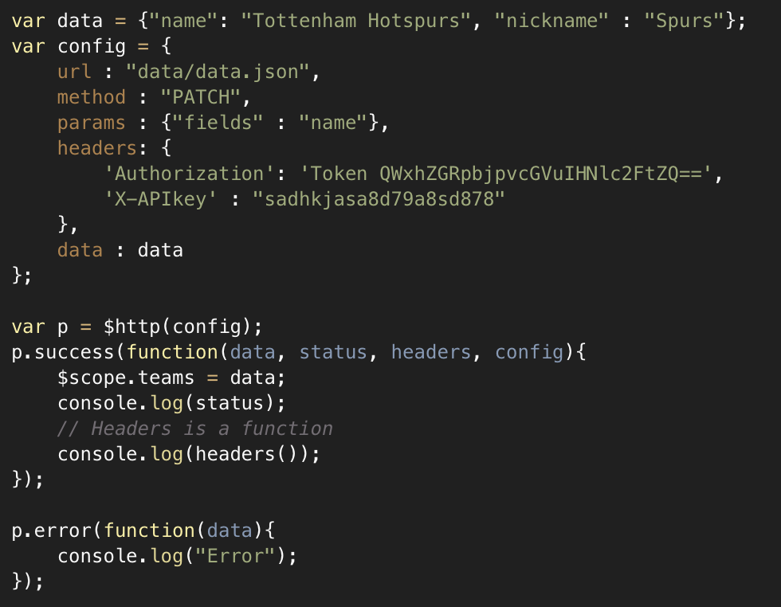
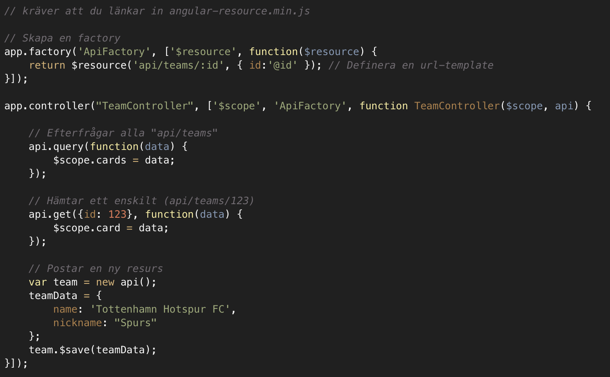
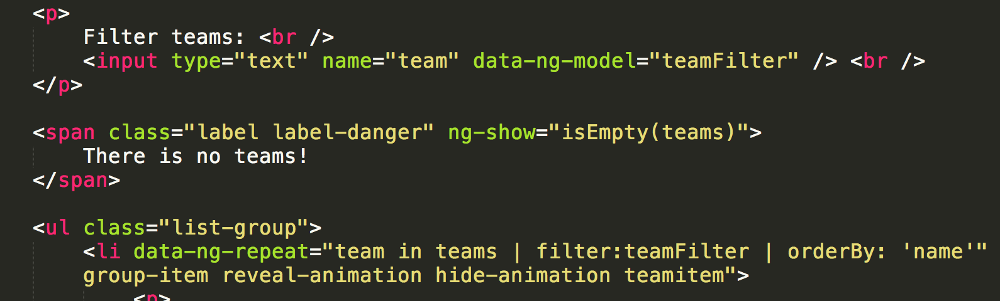
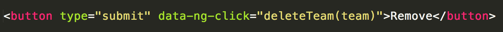
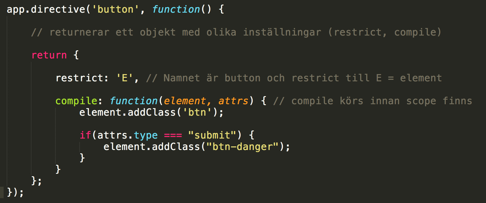
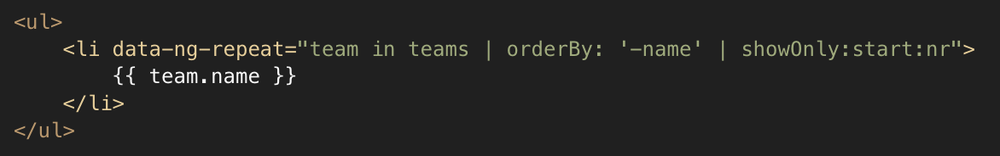
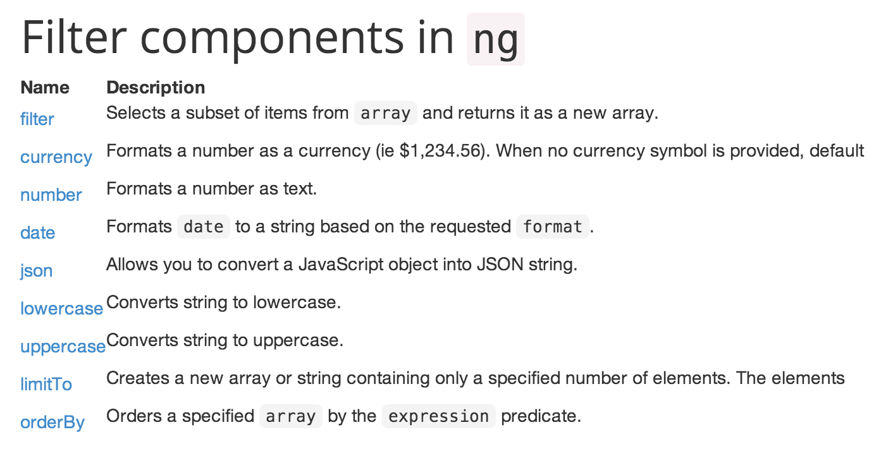

Webbramverk, 1DV450
Linnéuniversitetet, vt 2014
JavaScriptramverk
AngularJS
AngularJS - Förra gången

- BaaS och SPA
- Directives (imperativ vs. deklarativ)
- Filters
- Scope
- MVW
- Dependency injection
- Services
AngularJS - Idag
- Synkrona anrop
- $http, $resources
- Promise API
- Custom Directives
- Custom filters
SPA - Asynkrona anrop
- XMLHttpRequest (XHR)
- Vi vet inte när vi får svar eller i vilken ordning
- Asynkron programmeringsmodell
- Koden kan lätt bli rörig vid många av varandra beroende anrop
- Anropa en tjänst på en annan server?
Same-orgin security policy:
XHR får ske endast till samma källa (protocol, host, port)

Lösningar - Same-orgin security policy
- Proxy
- JSONP
- CORS - Cross-orgin resource sharing
JSONP - JSON with padding
Anrop som körs direkt i webbläsaren
// Länka in (eller efterfråga) ett javascript från "den andra servern"
<script src="http://example.com/jsonp.php?callback=parseData"></script>
// Svaret från servern anropar den callback du har i din kod
parseData({"Name": "Foo", "Id": 1234, "Rank": 7});
// Funktion definierad i din JS
function parseData(obj) {
// Do stuff
}
Endast GET
Felhantering - inga HTTP resonse codes
XSS - Cross Site Scripting
Servern kan injekta kod rakt in i webbläsaren - i en user session
I angularJS
var url = "http://public-api.wordpress.com/rest/v1/posts?callback=JSON_CALLBACK";
$http.jsonp(url)
.success(function(data){
console.log(data.found);
}
);
CORS (Cross-orgin resource sharing)
- W3C specifikation
- Kordinerar server och klient - Genom request och response headers
- Inbyggt i angular
- Problem med tidigare IE-versioner (delvis stöd i IE8-9 - Ej angular)
- Simple (GET, POST, HEAD) - non-simple (PUT, DELETE, PATCH)
- Vid nonsimple måste klienten skicka en OPTIONS och vänta på serverns godkänande

XHR i angularJS - $http
AngularJS har ett inbyggt API som inkuderar XHR, JSONP, CORS m.m.
- $http.get(url, config)
- $http.post(url, data, config)
- $http.put(url, data, config)
- $http.delete(url, config)
- $http.head(url, config)
- $http.jsonp(url, config)



Promise API - Varför?
Ett försök att göra asynkron programmering mer lik synkron
- Promise API - ej specifikt för angularJS
- I AngularJS används $q-service (inspirerat från http://github.com/kriskowal/q)
- Promises ses som "hållare" för framtida resultat - t.ex. en AJAX-förfrågan
- Kedja metodanrop, enklare felhantering...
- $http
Bök
function fetchData(id, cb){
getDataFromServer(id, function(err, result){
if(err){
cb(err, null);
}else{
transformData(result, function(err, transformedResult){
if(err){
cb(err, null);
}else{
saveToIndexDB(result, function(err, savedData){
cb(err, savedData);
});
}
});
}
});
}
Promise API i angularJS
// Deferred - "dröjd" - Skapa en uppgift
var taskToDo = $q.defer()
// Ett promise är något som i framtiden kan lyckas eller misslyckas
var promise = taskToDo.promise;
// Talar om vad som ska ske i de olika fallen
promise.then(successHandler, errorHandler);
// När vi ska fullgöra vårt "promise" någon gång i framtiden
taskToDo.resolve(params);
// När något gått fel
taskToDo.reject(params);
Exempel Promise and $http

$resources
Angular har en service som kapslar in RESTful-anrop (CRUD)

Custom Directives
- Angular har ett antal built-in directives (ngClick, ngShow)
- Man kan också utveckla egna! - Utöka HTML
- Ge möjlighet för mer deklarativ programmering
- Hanterar DOM-hantering i dina direktiv
- Återanvända i UI

Kan inkluderas som element, attribut, kommentar och CSS-klass
<my-directive></my-directive>
<input my-directive="">
<input class="my-directive">
<!-- directive: my-directive -->
- Browsern skapar DOM-trädet
- Angular går igenom hela DOM-trädet
- Matchar element, attribut, css-klasser, kommentarer mot de registrerade "directives" som finns
- När dessa hittas så körs deras "compile functions" som returnerar "linking functions" - Innan scope skapats
- Scope skapas och alla "linking functions" anropas
- Eventuell bindning mellan Scope och DOM kan ske där
Deklarativt i HTML

Kod i applikationen

http://amitgharat.wordpress.com/2013/06/08/the-hitchhikers-guide-to-the-directive/
Exempel Custom directives
Custom filters


ExempelCustom filters
 Denna presentation är licensierat under en
Creative Commons Erkännande 3.0 Unported Licens. (Där inte annat anges)
Denna presentation är licensierat under en
Creative Commons Erkännande 3.0 Unported Licens. (Där inte annat anges)